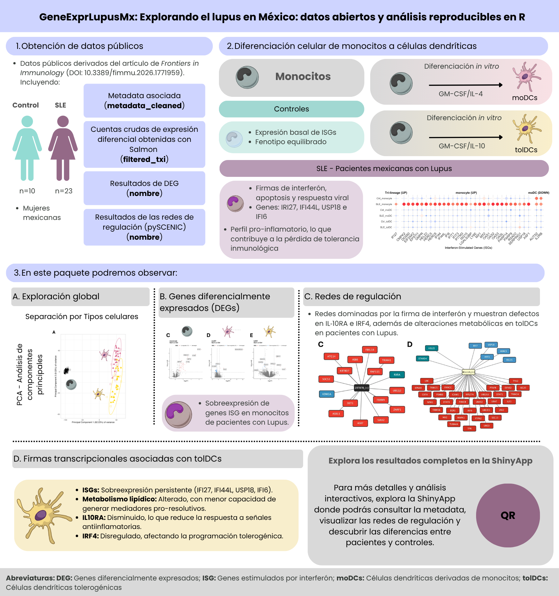

Explorando el lupus en México: datos abiertos y análisis reproducibles en R
GeneExprLupusMx es un paquete de datos en R, bilingüe y reproducible, que integra perfiles transcriptómicos y metadatos clínicos de mujeres mexicanas con lupus eritematoso sistémico (SLE) y controles sanas. Incluye la expresión génica de monocitos, células dendríticas derivadas de monocitos (moDC) y células dendríticas tolerogénicas (tolDC) de 33 voluntarias (10 controles y 23 pacientes; 99 muestras), junto con lecciones que reproducen, paso a paso, las figuras del artículo original.
- Uso educativo: recurso didáctico en bioinformática, inmunología y ciencias biomédicas.
-
Análisis reproducibles: datos, checkpoints y scripts (
data-raw/) para replicar las figuras y análisis del estudio. - Ciencia abierta: hace visibles y reutilizables datos biomédicos generados en América Latina.
Exploring lupus in Mexico: open data and reproducible analysis in R
GeneExprLupusMx is a bilingual, reproducible R data package that integrates transcriptomic profiles and clinical metadata from Mexican women with systemic lupus erythematosus (SLE) and healthy controls. It includes gene expression from monocytes, monocyte-derived dendritic cells (moDCs) and tolerogenic dendritic cells (tolDCs) of 33 volunteers (10 controls and 23 patients; 99 samples), together with lessons that reproduce, step by step, the figures of the original article.
- Educational use: a teaching resource in bioinformatics, immunology and biomedical sciences.
-
Reproducible analyses: data, checkpoints and scripts (
data-raw/) to replicate the figures and analyses of the study. - Open science: makes biomedical data generated in Latin America visible and reusable.

Instalación / Installation
# install.packages("remotes")
remotes::install_github("EveliaCoss/GeneExprLupusMx")Algunas lecciones usan paquetes de Bioconductor / Some lessons use Bioconductor packages:
Lecciones / Lessons
Datos / Data
library(GeneExprLupusMx)
dim(filtered_txi$counts) # genes x muestras / genes x samples
#> [1] 21718 99
table(metadata_cleaned$Group, metadata_cleaned$Cell_type)
#>
#> moDC monocyte tolDC
#> Ctrl 10 10 10
#> SLE 23 23 23Los datos crudos de secuenciación (FASTQ) están en el European Genome-phenome Archive (EGA) con acceso controlado; los identificadores se encuentran en la Tabla suplementaria 2 del artículo. / The raw sequencing data (FASTQ) are deposited in the European Genome-phenome Archive (EGA) under controlled access; the identifiers are listed in Supplementary Table 2 of the article.
Cómo citar / How to cite
Si usas estos datos, cita el artículo original. / If you use these data, please cite the original article:
Hernández-Ledesma AL, Coss-Navarrete EL, et al (2026) Gene expression profiling of dendritic cell tolerance dysfunction in women with systemic lupus erythematosus. Front. Immunol. 17:1771959. doi: 10.3389/fimmu.2026.1771959.